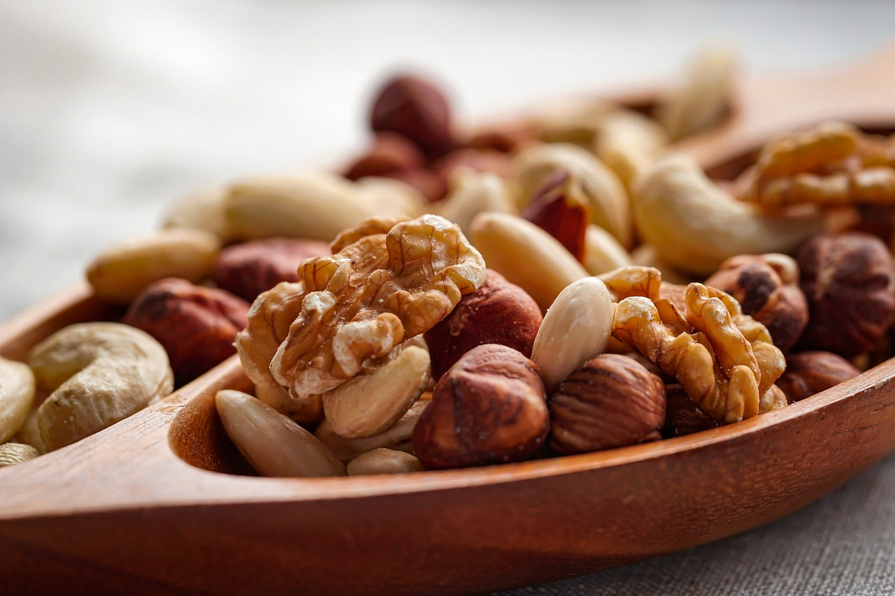
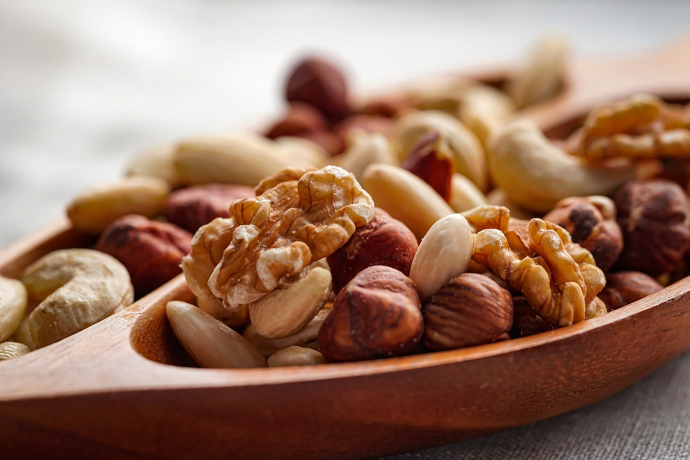

견과류는 단백질, 건강한 지방, 비타민, 미네랄이 풍부해 균형 잡힌 영양소를 제공해 줍니다.
오메가-3 지방산과 항산화 물질이 포함되어 있어 심혈관 건강을 개선하고 심장 질환의 위험을 줄이는 데 도움을 줍니다.
견과류는 포만감을 오래 유지시켜주어 과식을 방지하고 체중 조절에 유리합니다.
견과류는 뇌 건강에 좋은 지방과 항산화 물질이 많아 인지 기능을 향상시키는 데 도움을 줄 수 있습니다.
식이섬유가 풍부해 장 건강을 개선하고 소화 시스템을 원활하게 하는 데 기여합니다.